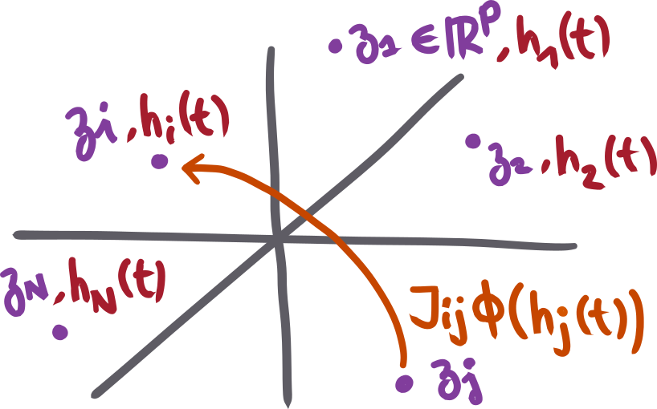
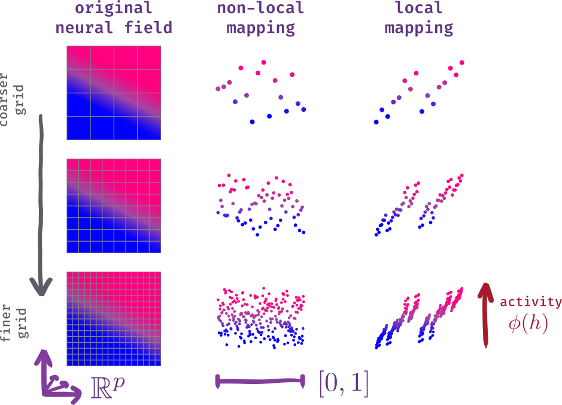

1 Introduction
1.1 Neural field models in neuroscience
Early recordings of cats’ somatosensory [1] and visual [2] cortices suggested that the cortical sheet is organized in vertical columns of functionally similar neurons.
The columnar organization of the cortex motivated the design of spatially structured models of neural population dynamics, namely neural field models [3]–[5], where the spatial dimensions corresponded to the two dimensions of the cortical sheet.
As models of spatiotemporal neural population dynamics on the cortical sheet, neural field models can be used to explain experimentally observed patterns of cortical activity, such as travelling waves in visual [6], [7], somatosensory [8], [9], motor [10], [11], and hippocampal [12]–[14] cortices (see [15] for a review), and are used to model large-scale brain signals, such as electroencephalography (EEG) recordings [16] (see also [17] for an example of neural field modelling of calcium imaging recording of the visual cortex).
More recent recording methods, especially in rodents, have provided evidence of low-dimensional organization of neuronal activity that does not depend on the physical locations of neurons on the cortical sheet. For example, contrary to cats’ visual cortex, the orientation selectivity of pyramidal neurons in a rat’s visual cortex does not depend on their locations, that is, orientation selectivity is heterogeneous at any given location [18]. Moreover, the activity of interneurons in any small volume of the visual cortex is also heterogeneous and seems to be structured by a low-dimensional manifold of fine cell subtypes [19]. The local functional heterogeneity of neuronal activity in the cortex challenges the old concept of functionally homogeneous cortical columns and, with it, classical neural field models.
While, historically, the spatial dimensions in neural field models have been the two dimensions of the cortical sheet (with the notable exception of the ring models for orientation selectivity in the visual cortex [20] and the head-direction system [21]), the “space” in neural field models does not need to represent physical space but can represent any suitable abstract embedding space. Neural field models with abstract embedding spaces could constitute a generalization of classical neural field theory for cortical networks that are not solely structured by distances of neurons on the cortical sheet.
If we consider neural fields in abstract embedding spaces, which embedding space should we choose? More fundamentally, given some spatiotemporal dynamics, is there a “natural” choice for the embedding space?
The goal of this Master Thesis is to show that the answer to the second question is highly nontrivial because even the dimensionality of the embedding space, for some given spatiotemporal dynamics, is not clearly defined. This means that it is possible to find two embeddings (each associated with a connectivity kernel) of different dimensions that give rise to identical dynamics.
In particular, we show that for any two-dimensional neural field equation (that is, with two spatial dimensions), there is a one-dimensional neural field equation, where the embedding space is simply the interval \([0,1]\), from which the solution to the two-dimensional equation can be fully reconstructed. The mapping from the two-dimensional equation to the one-dimensional equation is done via well-known measurable bijections between the square \([0,1]^2\) and the interval \([0,1]\). Importantly, these bijections are not (and can’t be) diffeomorphisms. Also, we show that although the connectivity kernel of the one-dimensional equation seems to have a fractal structure, it is sufficiently regular for its solution to be numerically approximated using standard grid-based simulations.
Our results suggest that the notion of (spatial) dimensionality in neural field dynamics is not well-defined if not associated with a constraint on the regularity of the neural fields (and the connectivity kernel). Thereby, by studying a simple toy model, this work illustrates the importance of the analytic notion of regularity when neural population dynamics over abstract continuous spaces are considered.
1.2 Neural fields as the limit of spatially-structured networks of neurons
Let us now give a short introduction to the mathematical theory of neural fields. Neural field equations emerge from the spatial structure of networks of rate neurons (or Poisson spiking neurons [22], [23]) when the number of neurons \(N\) becomes large. Positions \(\boldsymbol{z}_i \in \mathbb R^p\) are attributed to each neuron, where \(\mathbb R^p\) is the embedding space. Each neuron has a potential \(h_i(t)\) that evolves in time, and the weight with which the neurons interact with each other is given by the entries of the connectivity matrix \(J_{ij} \in \mathbb R^{N \times N}\). Additionally, the activation function \(\phi(h)\) describes the firing rate of a given neuron with potential \(h\). Then, the product \(J_{ij} \phi(h_j)\) gives the recurrent current of neuron \(j\) on neuron \(i\).

If the embedding is well-chosen,1 the connectivity matrix \(J_{ij}\) approaches a connectivity kernel \(w(\boldsymbol{y}, \boldsymbol{z})\) as \(N \rightarrow \infty\), and neurons close in the embedding space tend to have similar potentials, such that we can write the continuous neural field \(h(\boldsymbol{z}, t)\) of neuron potentials. Before we write down the neural field equation which describes how the field evolves in time, we need to introduce the neuron density \(\rho(\boldsymbol{z})\), which measures the number of neurons per unit volume of the embedding space. The neural field equation writes:
\[ \partial_t h(\boldsymbol{z}, t) = -h(\boldsymbol{z}, t) + \int_{\mathbb{R}^p} w(\boldsymbol{z}, \boldsymbol{y}) \phi(h(\boldsymbol{y}, t)) \rho(\mathrm d \boldsymbol{y}). \tag{1.1}\]
In this equation, as well as for the rest of this work, we will use the notation \(\rho(\mathrm d \boldsymbol{y}) := \rho(\boldsymbol{y}) \mathrm d \boldsymbol{y}\) to emphasize that the integral is weighted by the neuron density.
1.3 Motivation for a one-dimensional neural field
This work was inspired by recent mathematical development in mean-field theories involving the theory of graphons [25]. Informally, these recent results suggest that, as long as weights scale as \(1/N\), the dynamics of large networks can be described, as \(N \to \infty\), by a neural field equation where the embedding is simply the interval \([0,1]\), which motivates the search for a formulation of a one-dimensional neural embedding.
The main idea is to define a measurable bijective mapping \(S : \mathbb R^p\mapsto [0,1]\) and a measure \(\lambda : \mathbb R^p\mapsto \mathbb{R}^+\), such that we can write a one-dimensional neural field \(\tilde h(\alpha, t)\) with a connectivity kernel loosely defined as \(\tilde w(\alpha, \beta) = w(S^{-1}(\alpha), S^{-1}(\beta))\).
\[ \partial_t \tilde h(\alpha, t) = -\tilde h(\alpha, t) + \int_{[0,1]} \tilde w(\alpha, \beta) \phi(\tilde h(\beta, t)) \left[\lambda \circ S^{-1}\right](\mathrm d\beta) \]
This change of variable in the kernel seems counter-intuitive: how is it possible to map dynamics in the embedding space \(\mathbb R^p\) to dynamics in the lower dimensional embedding space \([0,1]\) without losing information? And even if mathematically such a change of variables is possible, is it even feasible to numerically simulate the dynamics in the lower dimensional embedding space?
1.4 Numerical simulations of neural fields
The goal of this thesis is to not only give an intuition on the mappings between the \([0,1]\) and \(\mathbb R^p\) embedding spaces, but also show that the mathematical construction works numerically.
We distinguish two types of numerical simulations for the neural field in Equation 1.1:
A neuron-based simulation of \(N\) neurons. The location of each neuron is an independent sample from the distribution \(\rho(z_1, \cdots, z_p)\). This case then just reduces to simulating the network of rate neurons. In other words, we are simulating the full network of rate neurons, and the simulation converges to the true mathematical neural field equation as \(N\) becomes large.
A grid-based simulation. In the \(\mathbb R^p\) space, we discretize each dimension, forming a grid of \(p\)-dimensional bins. Each bin effectively corresponds to an infinite population of neurons, which are approximated to be the same (this is a mean-field approximation). This works because by continuity of the field, neurons which are close in \(\mathbb R^p\) also have similar potentials. As we increase the number of bins, the simulation becomes more precise and the dynamics approach that of the true mathematical neural field.
With this in mind, we can try to understand why simulating a neural field in \([0,1]\) might be difficult. Suppose we take bins in the \(\mathbb R^p\) space, and map each bin to a random position in \([0,1]\). Intuitively, this won’t work (in the sense that the dynamics in \([0,1]\) will not be the same as the dynamics in \(\mathbb R^p\)), because the hypothesis of continuity is not longer true: the mapping is random, so the nearby neurons in \([0,1]\) will no longer have similar potentials, and the error of the mean-field approximation will no longer vanish as we take increasingly many (and smaller) bins. This is visualized in Figure 1.1.

In some sense, we would like to find a mapping that conserves “locality”: populations that are close in \([0,1]\) should represent nearby populations in \(\mathbb R^p\), or at least there shouldn’t be “too many large discontinuities”.
1.5 Summary of contents
Chapter 2 introduces a toy model for a neural field in \(p\) dimensions, and tools to study its dynamics. We also discuss interpretations of numerical simulation schemes.
Chapter 3 is dedicated to the discussion of mappings from 2 dimensions to 1 dimension. We give intuitions accompanied by simulations, and discuss in detail how “locality” emerges from these mappings.
Finally, Chapter 4 tries to formalize the intuitive results obtained in the previous chapters. We build a metric to measure the “discretization error”, and provide the key arguments for a proof of convergence of the numerical approximations.